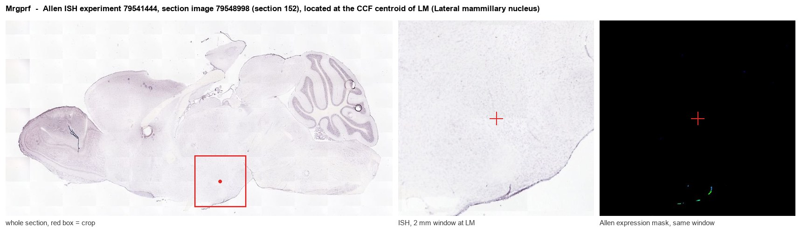
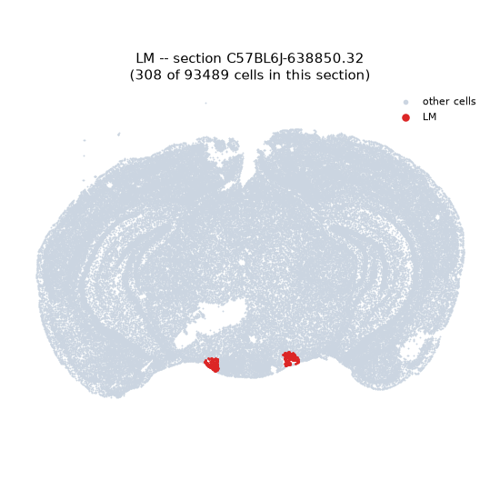
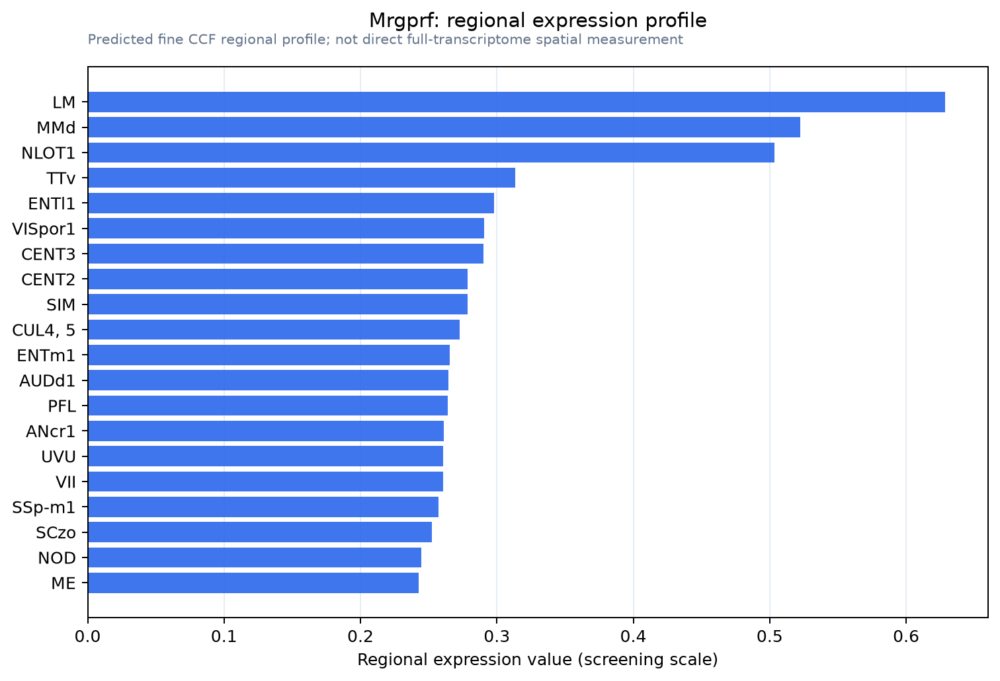

Mrgprf
Mas-related G protein-coupled receptor member F (Mas-related gene F protein)
Spatial tier: REGION_BIASED · Class: GPCR · Top region: LM (Lateral mammillary nucleus) · Positive regions: 53/554
49.7Discovery Score
37.0Targetability Score
CEvidence grade C
What this means: Mrgprf: fine CCF profile is region-biased toward LM (top regions: LM, MMd, NLOT1, TTv, ENTl1); this is a discovery lead, not direct proof.
Function in LM: evidence, prediction, innovation
- Gene function
- Mrgprf encodes MRGPRF, a member of the Mas-related G-protein-coupled receptor family. Unlike its relatives MRGPRD, MRGPRA3 and MRGPRB2, which are sensory-neuron or mast-cell receptors for itch and pain, MRGPRF is an orphan receptor concentrated in vascular smooth muscle and other mural cells, where it is thought to couple through Gq to contractile signalling. No endogenous agonist is established.
- Region function
- The lateral mammillary nucleus produces the head-direction signal from vestibular and dorsal tegmental input and relays it through the mammillothalamic tract to anterodorsal thalamus for spatial orientation.
- Published in this region
- none No region-specific literature found. The closest evidence is that single-cell atlases of the mouse brain vasculature place Mrgprf among mural-cell, principally arterial smooth-muscle, transcripts (Vanlandewijck et al. 2018; He et al. 2018), and that Mrgprf appears as a smooth-muscle-associated candidate in vascular disease datasets (Ma et al. 2021); other central Mrgpr work concerns sensory itch pathways (Jin et al. 2025).
- Predicted function
- Prediction: this signal is vascular, not neuronal. The mammillary body is exceptionally densely vascularised and fed by penetrating arterioles, so an arterial smooth-muscle transcript such as Mrgprf will score highly there without any mammillary neuron expressing it. The predicted local function is arteriolar tone and myogenic reactivity in the mammillary supply. Smooth-muscle-restricted Mrgprf deletion should alter resting perfusion and pressure autoregulation, with head-direction tuning changing only if perfusion falls far enough to compromise the nucleus.
- Innovation
- ★★★★★ 5/5 Completely unstudied here, but the vascular origin of the signal means the tractable question is cerebrovascular tone rather than head-direction coding.
- Tools
- Mrgpr cluster deletion (Mrgpr-clusterDelta) mice; no selective agonist or antagonist; anti-MRGPRF antibodies of limited validation; smooth-muscle targeting via Myh11-CreERT2 and Acta2-CreERT2, or Pdgfrb-CreERT2 for mural cells.
- References
Direct evidence located at the region

Allen ISH experiment 79541444, section image 79548998 (section 152): the section that contains the CCF centroid of Lateral mammillary nucleus according to the Allen image-to-atlas alignment (reference_to_image), with a 2 mm window around that point. Left: whole section, red box = window. Middle: ISH signal. Right: Allen's expression-mask view of the same window. open this image in the Allen viewer
Look it up yourself: Allen Mouse Brain ISH for MrgprfAllen reference atlas: LM (structure 210)ABC Atlas MERFISH viewer(in the ABC Atlas choose dataset MERFISH-C57BL6J-638850-CCF, colour cells by gene "Mrgprf" or by parcellation_substructure "LM")All genes confined to LM + 3-D brain
Direct spatial evidence
MERFISH REGION LOCATOR

Regional expression figure

Predicted WMB × fine-CCF profile; not direct full-transcriptome spatial measurement.
Spatial profile
Evidence and specificity
- Evidence status
- PREDICTED_FINE
- Direct sources
- None; predicted localization only
- Exclusive threshold
- 12 positive regions out of 554
- Spatial specificity
- 0.289
- Top-region fraction
- 0.041
- Filter status
- PASS
Interpretation limits
- Cell-type-to-region projection is imputed expression, not direct spatial measurement.
- Adult reference atlases do not establish stability across age, sex, strain, state, or disease.
- Transcript abundance does not guarantee protein abundance or genetic-tool performance.